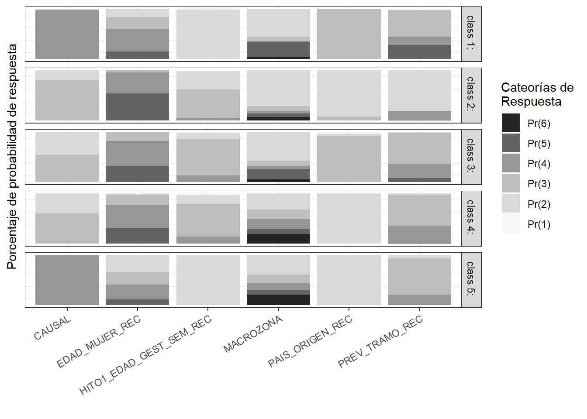

Paso 4
Resumen de datos para exportar a revista
Cargar paquetes
Cargar bases de datos
Análisis de clases latentes, modelos definitivos, sin pueblo originario y año
used (Mb) gc trigger (Mb) max used (Mb)
Ncells 2887646 154.3 4777030 255.2 4777030 255.2
Vcells 4775067 36.5 10146329 77.5 7177431 54.8
Saving 7 x 5 in image
Saving 7 x 5 in imageWarning: `add_rownames()` was deprecated in dplyr 1.0.0.
Please use `tibble::rownames_to_column()` instead.
This warning is displayed once every 8 hours.
Call `lifecycle::last_lifecycle_warnings()` to see where this warning was generated.| Name | cat | Overall | 0 | 1 | p | test |
|---|---|---|---|---|---|---|
| n | 3789 | 606 | 3183 | |||
| CAUSAL | Causal 1 | 1171 (30.9) | 203 (33.5) | 968 ( 30.4) | <0.001 | |
| CAUSAL | Causal 2 | 1887 (49.8) | 346 (57.1) | 1541 ( 48.4) | ||
| CAUSAL | Causal 3 | 731 (19.3) | 57 ( 9.4) | 674 ( 21.2) | ||
| EDAD_MUJER_REC | [Perdidos] | 18 ( 0.5) | 2 ( 0.3) | 16 ( 0.5) | 0.024 | |
| EDAD_MUJER_REC | 1. <18 | 269 ( 7.1) | 55 ( 9.1) | 214 ( 6.7) | ||
| EDAD_MUJER_REC | 2. 18-24 | 720 (19.0) | 102 (16.8) | 618 ( 19.4) | ||
| EDAD_MUJER_REC | 3. 25-35 | 1646 (43.4) | 243 (40.1) | 1403 ( 44.1) | ||
| EDAD_MUJER_REC | 4. >=35 | 1136 (30.0) | 204 (33.7) | 932 ( 29.3) | ||
| PAIS_ORIGEN_REC | [Perdidos] | 18 ( 0.5) | 5 ( 0.8) | 13 ( 0.4) | 0.005 | |
| PAIS_ORIGEN_REC | Chile | 3091 (81.6) | 518 (85.5) | 2573 ( 80.8) | ||
| PAIS_ORIGEN_REC | Otros | 680 (17.9) | 83 (13.7) | 597 ( 18.8) | ||
| HITO1_EDAD_GEST_SEM_REC | [Perdidos] | 87 ( 2.3) | 12 ( 2.0) | 75 ( 2.4) | <0.001 | |
| HITO1_EDAD_GEST_SEM_REC | 1. 0-13 semanas | 1328 (35.0) | 128 (21.1) | 1200 ( 37.7) | ||
| HITO1_EDAD_GEST_SEM_REC | 2. 14-27 semanas | 2008 (53.0) | 343 (56.6) | 1665 ( 52.3) | ||
| HITO1_EDAD_GEST_SEM_REC | 3. >=28 semanas | 366 ( 9.7) | 123 (20.3) | 243 ( 7.6) | ||
| MACROZONA | [Perdidos] | 11 ( 0.3) | 3 ( 0.5) | 8 ( 0.3) | <0.001 | |
| MACROZONA | Centro | 1608 (42.4) | 198 (32.7) | 1410 ( 44.3) | ||
| MACROZONA | Centro Norte | 610 (16.1) | 74 (12.2) | 536 ( 16.8) | ||
| MACROZONA | Centro Sur | 555 (14.6) | 154 (25.4) | 401 ( 12.6) | ||
| MACROZONA | Norte | 431 (11.4) | 70 (11.6) | 361 ( 11.3) | ||
| MACROZONA | Sur | 574 (15.1) | 107 (17.7) | 467 ( 14.7) | ||
| AÑO | 2018 | 732 (19.3) | 115 (19.0) | 617 ( 19.4) | 0.306 | |
| AÑO | 2019 | 818 (21.6) | 149 (24.6) | 669 ( 21.0) | ||
| AÑO | 2020 | 662 (17.5) | 103 (17.0) | 559 ( 17.6) | ||
| AÑO | 2021 | 820 (21.6) | 131 (21.6) | 689 ( 21.6) | ||
| AÑO | 2022 | 757 (20.0) | 108 (17.8) | 649 ( 20.4) | ||
| PREV_TRAMO_REC | [Perdidos] | 14 ( 0.4) | 4 ( 0.7) | 10 ( 0.3) | <0.001 | |
| PREV_TRAMO_REC | ISAPRE o FFAA | 488 (12.9) | 37 ( 6.1) | 451 ( 14.2) | ||
| PREV_TRAMO_REC | FONASA A/B | 2096 (55.3) | 382 (63.0) | 1714 ( 53.8) | ||
| PREV_TRAMO_REC | FONASA C/D | 1092 (28.8) | 179 (29.5) | 913 ( 28.7) | ||
| PREV_TRAMO_REC | NINGUNA | 99 ( 2.6) | 4 ( 0.7) | 95 ( 3.0) | ||
| HITO2_DECISION_MUJER_IVE | CONTINUAR EL EMBARAZO | 593 (15.7) | 593 (97.9) | 0 ( 0.0) | <0.001 | |
| HITO2_DECISION_MUJER_IVE | INTERRUMPIR EL EMBARAZO | 3183 (84.0) | 0 ( 0.0) | 3183 (100.0) | ||
| HITO2_DECISION_MUJER_IVE | NO APLICA, INSCONSCIENTE | 13 ( 0.3) | 13 ( 2.1) | 0 ( 0.0) |
Warning: 'tidy.numeric' is deprecated.
See help("Deprecated")Warning in chisq.test(.$outcome, .$measure): Chi-squared approximation may be
incorrectWarning: 'tidy.numeric' is deprecated.
See help("Deprecated")
Warning: 'tidy.numeric' is deprecated.
See help("Deprecated")Warning in chisq.test(.$outcome, .$measure): Chi-squared approximation may be
incorrectWarning: 'tidy.numeric' is deprecated.
See help("Deprecated")Warning in chisq.test(.$outcome, .$measure): Chi-squared approximation may be
incorrectWarning: 'tidy.numeric' is deprecated.
See help("Deprecated")Warning in chisq.test(.$outcome, .$measure): Chi-squared approximation may be
incorrectWarning: 'tidy.numeric' is deprecated.
See help("Deprecated")Figuras


Regresión logística
| Clase | No interrumpe | Interrumpe |
|---|---|---|
| 1 | 0.19(95%CI=0.16,0.23) | 0.18(95%CI=0.17,0.19) |
| 2 | 0.18(95%CI=0.15,0.21) | 0.15(95%CI=0.14,0.17) |
| 3 | 0.3(95%CI=0.26,0.33) | 0.39(95%CI=0.37,0.4) |
| 4 | 0.16(95%CI=0.13,0.19) | 0.13(95%CI=0.12,0.14) |
| 5 | 0.17(95%CI=0.15,0.21) | 0.15(95%CI=0.14,0.17) |
Análisis de clases latentes, selección de clases, modelo alternativo, sin pueblo originario y año Búsqueda de clases, Análisis secundario
Medidas de ajuste poLCA y glca, combinados
| model_index | bic | a_bic | bic_2 | rel_ent | ent_r2 | entropy | gsq_2 | boot_p_value |
|---|---|---|---|---|---|---|---|---|
| 2 | 45819.78 | 45683.15 | 45803.30 | 0.99 | 0.98 | 0.99 | 2678.89 | 0 |
| 3 | 45568.50 | 45361.96 | 45543.78 | 0.91 | 0.89 | 0.91 | 2246.33 | 0 |
| 4 | 45399.87 | 45123.42 | 45366.91 | 0.90 | 0.89 | 0.90 | 1896.42 | 0 |
| 5 | 45317.18 | 44970.83 | 45275.98 | 0.91 | 0.89 | 0.91 | 1632.46 | 0 |
| 6 | 45386.28 | 44970.02 | 45336.84 | 0.83 | 0.80 | 0.83 | 1520.28 | 0 |
| 7 | 45478.47 | 44992.30 | 45420.79 | 0.78 | 0.76 | 0.78 | 1431.19 | 0 |
| 8 | 45591.83 | 45035.76 | 45525.91 | 0.79 | 0.76 | 0.79 | 1363.28 | 0 |
| 9 | 45703.82 | 45077.85 | 45629.66 | 0.76 | 0.73 | 0.76 | 1293.99 | 0 |
| 10 | 45820.84 | 45124.96 | 45738.44 | 0.76 | 0.72 | 0.76 | 1229.74 | 0 |
| model_index | bic | a_bic | bic_2 | rel_ent | ent_r2 | entropy | gsq_2 | boot_p_value |
|---|---|---|---|---|---|---|---|---|
| 2 | 45776.24 | 45636.43 | 45759.76 | 0.99 | 0.99 | 0.99 | 3536.09 | 0 |
| 3 | 45481.98 | 45269.09 | 45457.26 | 0.89 | 0.86 | 0.89 | 3052.32 | 0 |
| 4 | 45305.93 | 45019.95 | 45272.97 | 0.91 | 0.89 | 0.91 | 2686.74 | 0 |
| 5 | 45230.37 | 44871.31 | 45189.17 | 0.92 | 0.90 | 0.92 | 2421.67 | 0 |
| 6 | 45255.46 | 44823.32 | 45195.29 | 0.86 | 0.83 | 0.86 | 2246.52 | 0 |
| 7 | 45447.71 | 44942.48 | 45259.35 | 0.88 | 0.84 | 0.85 | 2129.29 | 0 |
| 8 | 45697.24 | 45118.93 | 45333.74 | 0.83 | 0.78 | 0.78 | 2022.41 | 0 |
| 9 | 46281.80 | 45630.41 | 45416.50 | 0.85 | 0.75 | 0.76 | 1923.89 | 0 |
| 10 | 46669.37 | 45944.89 | 45534.20 | 0.95 | 0.91 | 0.74 | 1860.32 | 0 |
Warning in file.create(to[okay]): cannot create file
'polca_glca_fit_table.xlsx', reason 'Permission denied'Figuras